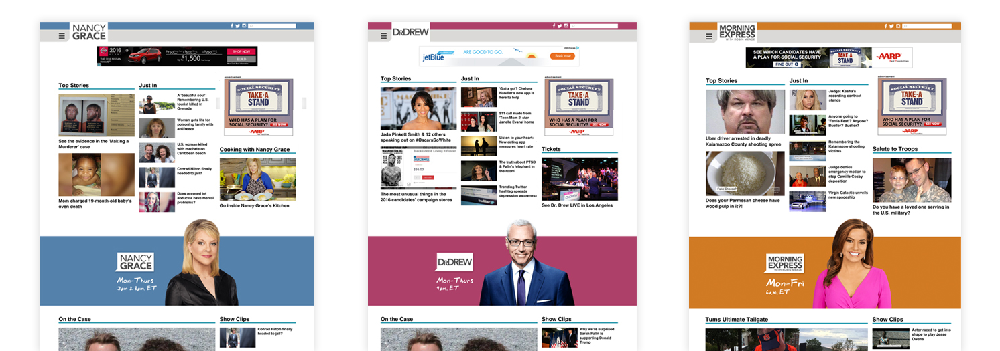

As the design lead on a multifunctional team, I worked closely with Product and Development to create the
overall user experience of the new site and to design page templates, responsive reflow rules, visual styles
and interface components.
I also helped define what the MVP would look like and collaborated with Product on gathering requirements by
interviewing stakeholders and conducting Design Studio workshops.
This page was the biggest challenge to design and the biggest success. It is the face of the digital network and was particularly important to a number of internal clients, including editorial, business development and sales teams. Our team went through multiple designs in order to meet everyone's goals, all while keeping the external user of the site at the center of our vision.
The start of our entire project, the article page is essential to overall traffic flow of the site. Since most traffic to the site comes from social media, it was crucial for us to design the optimal article page experience on mobile. We took a modular approach to this page in order to give editorial more freedom with video, gallery and social media embeds.
Because each show has its own identity, we wanted to make sure its page reflected it, despite all show pages having a similar template. I communicated with each show to make sure their needs were met and guided the teams in populating their show pages with show-specific content.
